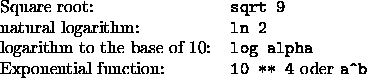

The following functions calls to set SNNS parameters are available:
The format and the usage of the function calls will be discussed now. It is an enormous help to be familiar with the graphical user interface of the SNNS especially with the chapters ``Parameters of the learning functions'', ``Update functions'', ``Initialization functions'', ``Handling patterns with SNNS'', and ``Pruning algorithms''.